長野県でおすすめのLLMO会社10選｜費用相場と選び方もわかりやすく解説
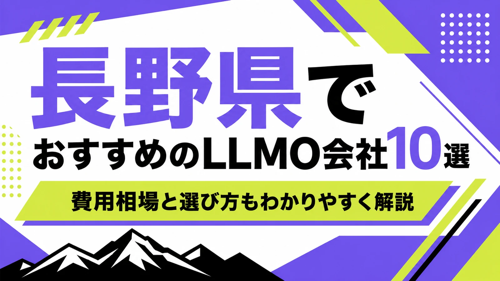
長野県でLLMO会社を選ぶときは、「長野のホームページ制作会社」や「松本のSEO会社」という探し方だけでは足りません。長野市・松本市の生活者向け商圏、軽井沢・白馬・上高地・善光寺・諏訪湖の観光、諏訪・岡谷・上田・伊那の精密機械や電子部品、佐久・北信・南信の農産物や食品、移住・別荘・採用の検索では、AI検索で聞かれる質問が大きく変わるからです。
長野県の推計人口は、令和8年2月1日現在で1,967,370人、世帯数は861,927世帯です。令和6年の観光地利用者数は延べ8,515万人、観光地消費額は3,327億円で、主要観光地の上位3位は「軽井沢高原」「善光寺」「上諏訪温泉・諏訪湖」と公表されています。2023年経済構造実態調査の製造業事業所調査では、長野県分の事業所数が6,148事業所、従業者数が206,238人、製造品出荷額等が7兆1,391億6,000万円でした。
この記事では、長野県でLLMOに取り組むときに比較したい会社、選び方、費用相場をまとめます。基礎から確認したい方はLLMO対策の基礎記事、甲信越の近隣県も見たい方は山梨県の比較記事や新潟県の比較記事も参考になります。自社サイトの現状を先に見たい場合は無料LLMO診断から確認できます。
目次

長野県でおすすめのLLMO会社10選
今回は、長野県内に拠点があり、ホームページ制作、SEO、Webマーケティング、ブランディング、CRM、広告、コンテンツ制作、運用改善などの公開情報を確認しやすい会社を中心に、LLMOを明示している全国対応会社も補完的に加えました。長野県内で「LLMO専業」を大きく打ち出す会社はまだ多くないため、AI検索対策そのものだけでなく、サイト構造、FAQ、地域ページ、事例、観光情報、採用情報、商品情報、更新体制まで支援できるかを見ています。
長野県では、長野市・松本市の都市型サービス、軽井沢・白馬・上高地の観光、諏訪・岡谷の精密産業、上田・佐久・伊那の製造や食品、農産物、移住・別荘需要など、AIに答えさせたい質問が地域ごとに変わります。まずは表で向いている企業を確認し、その後に各社の特徴を見てください。
| 会社名 | 主な拠点・対応 | 向いている企業 | 確認できる主な支援領域 |
|---|---|---|---|
| 株式会社ミゴエイト | 飯綱町・長野県内 | SEOとLLMOを明示して相談したい企業 | Webコンサル・ホームページ制作・SEO・LLMO・アクセス解析 |
| 株式会社toritoke | 松本市・安曇野市 | マーケティング戦略とブランド発信を整えたい中小企業 | マーケティング支援・ブランディング・ホームページ制作・SEO・広告 |
| 株式会社JBN | 長野市 | HubSpotやCRMまで含めてBtoB集客を整えたい企業 | HubSpot導入・デジタルマーケティング・Webサイト構築・コンテンツ制作 |
| 有限会社イー・オフィス | 松本市 | 制作から広告・MEO・ECまで地域密着で相談したい企業 | ホームページ制作・Webコンサル・広告・EC・MEO・動画 |
| 有限会社デザインスタジオ・エル | 長野市 | 「らしさ」を言葉とデザインで整理したい企業 | ブランディング・Webサイト制作・グラフィック・ライティング |
| 株式会社アプリコットデザイン | 長野・東京 | ブランド、採用、集客、運用をまとめて見直したい企業 | ブランディング・Web制作・採用支援・広告運用・情報発信支援 |
| 株式会社Cruw | 上田市 | 上田・東信エリアでWebとシステムを相談したい企業 | ホームページ制作・システム開発・Web活用支援 |
| 株式会社snoh | 諏訪市 | 諏訪・岡谷周辺でデザインと集客設計を重視したい企業 | ホームページ制作・Webデザイン・DTP・動画制作 |
| 株式会社LiKG | 全国対応 | AI検索診断と独自データ活用まで進めたい企業 | LLMO診断・LLMO×SEOコンサル・記事制作・構造改善 |
| 株式会社ジオコード | 全国対応 | SEO、AIO、LLMO、実装までまとめたい企業 | SEO・AIO/LLMO・コンテンツ・UIUX・サイト修正 |
株式会社AIMAは長野本社の会社ではありませんが、全国対応でLLMO支援を提供しています。月額5万円のLLMO支援は初期費用なし・1ヶ月単位で始められ、質問設計、記事制作、引用チェックに絞って実務を進められます。長野市、松本市、軽井沢町、白馬村、諏訪市、上田市、伊那市のように検索文脈が分かれる場合も、まず無料LLMO診断で優先順位を確認できます。
株式会社ミゴエイト
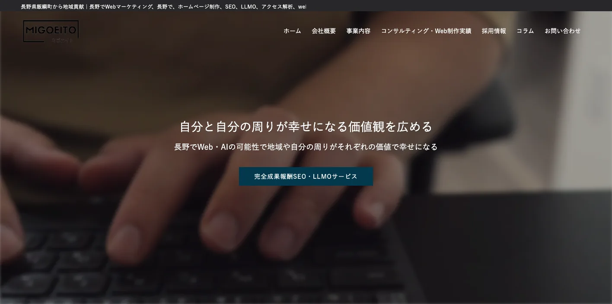
株式会社ミゴエイトは、長野県飯綱町から地域貢献を掲げるWebコンサルティング会社です。公式サイトでは、長野でのWebマーケティング、ホームページ制作、SEO、LLMO、アクセス解析、Webコンサルティングを確認できます。完全成果報酬SEO・LLMOサービスも掲げ、AIと専門家の知見を掛け合わせた集客支援を打ち出しています。
長野県でLLMOを進める場合、SEOとAI検索の両方を見ながら、地域名、業種名、観光名、採用名の質問を整理する必要があります。ミゴエイトは、長野市・北信エリアの中小企業や観光・地域事業者が、検索流入とAI検索での見え方を同時に見直したい場合に向いています。
株式会社toritoke
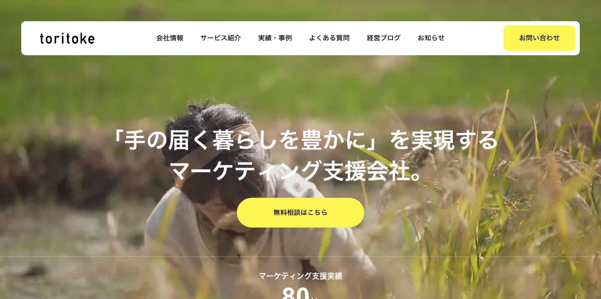
株式会社toritokeは、長野県松本市・安曇野市を拠点とするマーケティングとブランディングの支援会社です。公式サイトでは、マーケティング戦略、ブランドの言語化、WebやSNSでの発信設計・運用、ホームページ制作・運用、SEO対策、広告運用、コンテンツマーケティング、オウンドメディア運用などを確認できます。
長野県では、地域の小さな会社ほど「何を発信すれば選ばれるのか」が曖昧になりやすいです。toritokeは、松本・安曇野周辺のBtoC、飲食、建築、教育、地域サービス、農産物、ECなどで、ブランドの言葉とWeb集客を一緒に整えたい企業に向いています。
参考：株式会社toritoke｜トップページ、参考：株式会社toritoke｜会社紹介
株式会社JBN
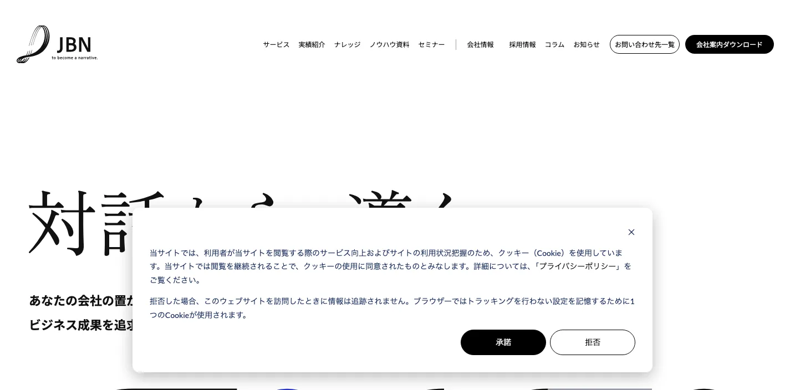
株式会社JBNは、長野市のWebサイト構築・デジタルマーケティング支援会社です。公式サイトでは、HubSpotのプラチナパートナーとして、CMS Hubによるサイト構築、HubSpot CRMの設計、Marketing Hubによるマーケティング支援、Service Hubによる営業ツール導入、Webサイト構築、コンテンツ制作などを確認できます。
LLMOは記事制作だけではなく、問い合わせ後の営業、CRM、ナーチャリングまでつながると効果を見やすくなります。JBNは、長野市や県内BtoB企業、製造業、専門サービス、採用強化企業が、Webサイトを会社案内から事業推進の仕組みに変えたい場合に向いています。
有限会社イー・オフィス
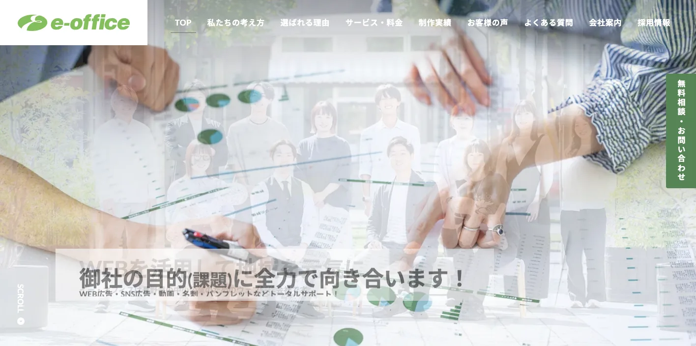
有限会社イー・オフィスは、長野県松本市のホームページ制作・Webコンサルティング会社です。公式サイトでは、長野県松本市、安曇野市、塩尻市で800件以上の実績、ホームページ制作、Webコンサル、デザイン、広告、ECサイト、動画、SNS広告、MEO集客、メンテナンスサポートなどを確認できます。
松本市・安曇野市・塩尻市は、観光、医療、製造、建設、採用、地域店舗が混ざる商圏です。イー・オフィスは、制作だけでなく、広告、SNS、MEO、EC、動画まで地域密着で整えたい中小企業に向いています。LLMOでは、既存サイトの情報不足を補いながら、地域検索とAI検索の両方に答えられるページづくりが重要です。
有限会社デザインスタジオ・エル
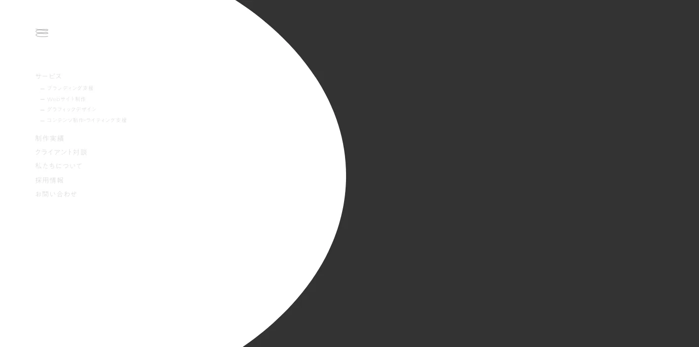
有限会社デザインスタジオ・エルは、長野市のブランディングデザイン会社です。公式サイトでは、ブランディング支援、Webサイト制作、グラフィックデザイン、コンテンツ制作・ライティング支援を確認できます。Webサイト制作では、コーポレートサイト、ブランドサイト、サービスサイト、採用サイト、更新システムなどに対応し、1000件を超える制作実績も示されています。
LLMOでは、AIに拾われる文章を増やす前に、会社の「らしさ」や選ばれる理由を言語化することが重要です。デザインスタジオ・エルは、長野市周辺の医療、教育、福祉、地域ブランド、観光、採用、軽井沢・白馬のブランド型事業などで、言葉、デザイン、写真、ストーリーを一体で整えたい企業に向いています。
参考：デザインスタジオ・エル｜トップページ、参考：デザインスタジオ・エル｜Webサイト制作
株式会社アプリコットデザイン
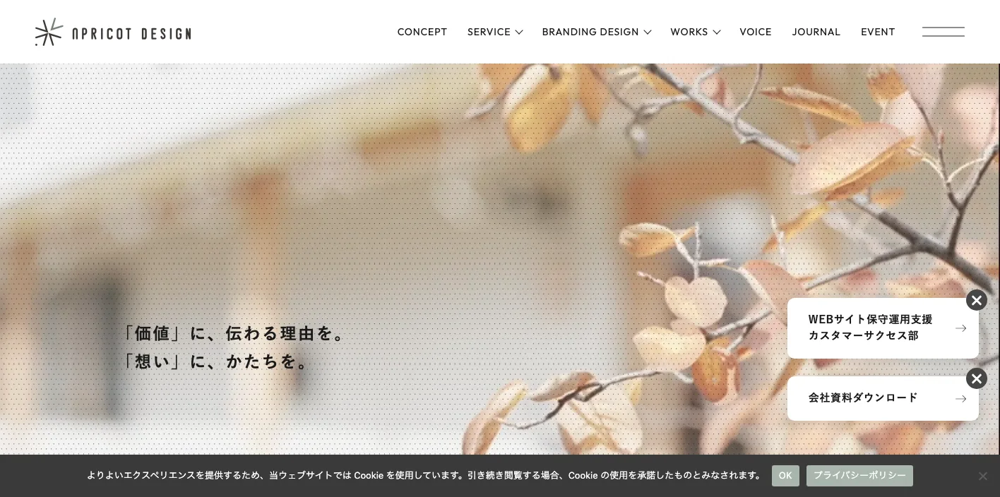
株式会社アプリコットデザインは、長野と東京を拠点に、ブランディングと集客支援を行う会社です。公式サイトでは、Webサイト制作、採用サイト制作、ロゴ・VI制作、グラフィック制作、写真撮影、動画制作、ホームページ運用、広告運用、情報発信支援、スポットコンサル、アドバイザリー契約などを確認できます。
長野県の企業では、採用、集客、ブランディング、SNS、広告、写真が別々に動いてしまうことがあります。アプリコットデザインは、長野市や県内各地の店舗、採用強化企業、観光、食品、地域ブランドが、見た目だけでなく「誰にどう伝えるか」から整理したい場合に向いています。
株式会社Cruw
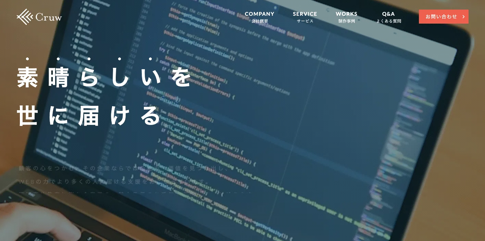
株式会社Cruwは、長野県上田市のWeb制作会社です。公式サイトでは、ホームページ制作、システム開発、制作事例、魅力や価値を見つけ出してWebの力で届ける支援を確認できます。顧客の心をつかむ、その企業ならではの魅力・価値を届けるという考え方も示されています。
上田市・東信エリアでは、製造、観光、地域店舗、教育、医療、食品、採用など、Webで整理すべき情報が多くなります。Cruwは、ただページを作るだけでなく、会社や商品の魅力を見つけて、問い合わせや採用につながる形に整えたい企業に向いています。
株式会社snoh
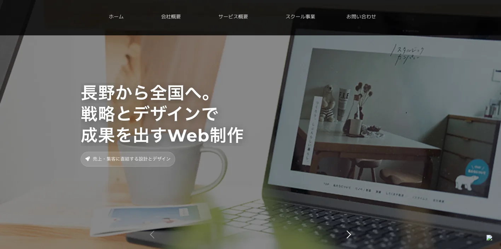
株式会社snohは、長野県諏訪市のホームページ制作・Webデザイン会社です。公式サイトでは、長野から全国へ、戦略とデザインで成果を出すWeb制作を掲げ、ホームページ制作、DTP制作、動画制作、デザイン、コンセプト設計などを確認できます。売上・集客に直結する設計とデザインを打ち出している点も特徴です。
諏訪・岡谷・茅野周辺は、精密機械、観光、温泉、地域店舗、医療、採用が混ざるエリアです。snohは、諏訪地域で見た目の印象と集客導線の両方を整えたい企業に向いています。LLMOでは、第一印象だけでなく、事業内容、料金、対応範囲、FAQをAIに読める形で出すことが重要です。
株式会社LiKG
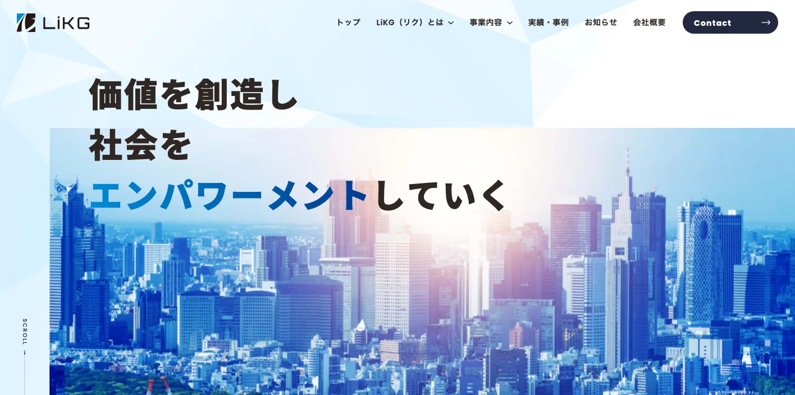
株式会社LiKGは、LLMOコンサルティングを明示している全国対応会社です。公式サイトでは、LLMO診断、LLMO×SEOコンサルティング、EEAT強化記事制作、AI検索での露出状況調査、競合比較、構造化データ改善指示、独自データ活用などを確認できます。料金は、LLMO診断10万円から、LLMO×SEOコンサルティング30万円から、EEAT強化記事制作5万円/1記事からと掲載されています。
長野県の企業がLiKGを比較するなら、県内取材や撮影よりも、AI検索の現状診断、独自データの活用、構造化データ、既存記事改善、全国競合との比較を重視する場合です。観光、製造、農産物、採用、移住、BtoBなどで、既存SEOはあるがAI検索でどう見られているか分からない企業に向いています。
株式会社ジオコード
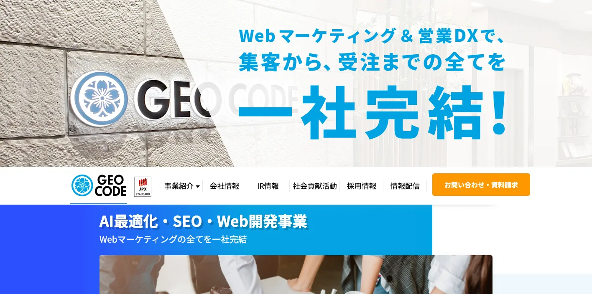
株式会社ジオコードは、SEO、コンテンツ、オウンドメディアから、AIO・LLMOなどAI最適化まで支援する全国対応会社です。公式サイトでは、通常プラン15万円から、SEO対策コンサルティング、サイト修正、デザイン/UIUX改善、AIO・LLMO、コンテンツマーケティング、構造化データ、AI生成回答の競合調査、独自情報の組み込みなどを確認できます。
長野県の企業がジオコードを比較するなら、サイト修正や実装を含むSEO・LLMO支援を重視する場合です。県外競合と比較される観光、EC、製造、医療、採用、BtoBなど、既存サイトの技術改善まで必要な企業に向いています。県内制作会社と分担する選び方もあります。
参考：株式会社ジオコード｜SEO対策・AIO・LLMOなどAI最適化
長野県のLLMO会社を比較する際のポイント
このブロックでは、会社名の知名度ではなく、長野県で成果に直結しやすい比較軸を整理します。会社紹介では「誰に向いているか」を見ましたが、ここでは発注前に見るべき能力を、長野市・松本市の都市商圏、観光、製造業、農産物・地域ブランド、県内密着と全国対応の使い分けに分けます。
長野市・松本市は、生活者向け検索とBtoB検索を分ける
長野市と松本市では、医療、士業、住宅、採用、教育、行政、観光、BtoB、店舗検索が混ざります。「長野市 歯科 おすすめ」「松本市 採用サイト 制作」「長野 製造業 Web集客」のように、誰が何を聞いているかで必要なページが変わります。
比較する会社には、トップページをきれいにするだけでなく、サービス別ページ、料金、事例、FAQ、採用情報、地域名ごとの対応情報をどう分けるかを聞いてください。LLMOでは、AIが質問に答えるための材料をページ単位で整理する必要があります。
軽井沢・白馬・上高地・善光寺は、観光の質問に答えられるかを見る
令和6年の長野県内観光地の利用者数は延べ8,515万人、観光地消費額は3,327億円でした。主要観光地の上位には、軽井沢高原、善光寺、上諏訪温泉・諏訪湖が並びます。観光事業者では、宿泊、交通、季節、天候、登山、スキー、インバウンド、子連れ、ペット同伴、予約、キャンセルなどの質問が出やすくなります。
LLMO会社を比較するときは、施設紹介だけでなく、アクセス、予約、周遊ルート、季節ごとの楽しみ方、雨の日、外国人対応、駐車場、持ち物、混雑、キャンセルまで設計できるかを見ます。観光では、AIに「この人にはどこが向くか」を説明してもらう準備が必要です。
諏訪・岡谷・上田・伊那の製造業は、技術情報と信頼材料を出せるかを見る
2023年経済構造実態調査の長野県分では、製造業の事業所数が6,148事業所、従業者数が206,238人、製造品出荷額等が7兆1,391億6,000万円でした。長野県は精密機械、電子部品、情報機器、食品、金属加工など、技術情報を持つ企業が多い地域です。
BtoBのLLMOでは、きれいなデザインよりも、設備、加工範囲、対応素材、品質管理、検査体制、ロット、納期、試作、OEM、導入実績、認証、よくある質問が重要です。比較する会社には、営業資料や現場情報をWebに変換する力があるかを確認してください。
農産物・食品・ワインは、商品情報と体験情報を分ける
長野県は、レタス、りんご、ぶどう、きのこ、花き、ワイン、日本酒など、地域性の強い商品が多い県です。長野県では、酒類の地理的表示「長野」の指定を受けた原産地呼称管理制度もあり、ワインや日本酒の地域ブランドづくりと情報発信は重要です。
この領域では、「商品を買いたい人」と「体験したい人」で必要な情報が違います。品種、産地、収穫時期、配送、保存、ギフト、直売、観光農園、試飲、予約、団体、雨天対応など、AIが答えやすいFAQを整えられる会社を選ぶとよいです。
県内会社と全国対応会社は、役割を分けて考える
長野県内の会社は、現地取材、撮影、地域商圏、観光地や移住・別荘需要の肌感覚に強いことが多いです。一方で、LLMO専業やSEO大手は、AI検索の診断、構造化データ、既存記事改善、全国競合の比較に強い場合があります。
おすすめは、最初に「何が足りないか」を切り分けることです。サイトが古い、写真が足りない、地域情報が薄いなら県内会社。記事は多いのにAI検索で出ない、構造化データや競合比較が弱いなら全国対応会社。両方必要なら、県内会社に取材・制作を任せ、LLMO会社に設計とチェックを任せる形もあります。
参考：長野県の人口と世帯数、令和6年観光地利用者統計調査結果、経済構造実態調査及び経済センサス-活動調査（製造業）産業別集計、GI長野/長野県原産地呼称管理制度
長野県のLLMO会社に依頼する費用相場
LLMOの費用は、診断だけなのか、記事制作まで含むのか、サイト改修や撮影、EC、予約、採用、CRM、システム開発まで必要なのかで変わります。長野県では、長野市・松本市の生活者向けサービス、軽井沢・白馬・上高地の観光、諏訪・岡谷の製造、農産物・食品・ワインの情報発信のように、追加で作るべきページやFAQの量が業種によって大きく変わります。
| 依頼内容 | 費用目安 | 長野県での考え方 |
|---|---|---|
| LLMO診断・AI検索の現状確認 | 無料〜10万円前後 | 自社名、地域名、業種名でAIにどう出るかを見る段階 |
| 小規模なSEO・LLMO運用 | 月額5万円〜15万円前後 | FAQ、地域ページ、既存記事改善を小さく回す段階 |
| 伴走型のSEO・LLMO支援 | 月額15万円〜30万円前後 | 競合調査、構成作成、構造化データ、改善提案、定例を含む段階 |
| サイト制作・改修込み | 50万円台〜300万円超 | 撮影、採用、EC、予約、CRM、製品情報、システム連携の有無で広がる |
| 観光・製造・多拠点の本格運用 | 月額30万円以上 | 複数地域、商品カテゴリ、営業資料、事例制作まで必要な段階 |
診断だけなら、まずは質問の棚卸しが中心
診断では、「長野 LLMO会社」「松本 ホームページ制作」「軽井沢 ホテル 子連れ」「白馬 スキー 宿 送迎」「諏訪 精密機械 加工」「長野 りんご ギフト」のような質問で、自社や競合がAIにどう扱われているかを確認します。いきなり記事を増やすより、どの質問で選ばれたいかを決めることが先です。
長野県の場合、観光、農産物、地域店舗、移住・別荘、BtoB製造で質問の形が大きく変わります。診断費用が安くても、調査する質問が浅いと意味がありません。県内の地名、業種、季節、購買目的まで含めて見てくれるかを確認してください。
月額5万〜15万円は、既存サイトを育てる段階
小規模運用では、既存ページの修正、FAQ追加、地域ページ、事例ページ、お知らせ、ブログの改善を進めます。長野市や松本市の店舗、士業、治療院、住宅、採用、観光農園、宿泊施設などは、最初から大きな改修をせず、AIに拾われやすい基本情報を増やすだけでも前進します。
この価格帯では、毎月大量の記事を作るより、料金、対応エリア、予約、アクセス、キャンセル、事例、よくある質問を整えるほうが現実的です。文章の量より、ユーザーの疑問に答える密度を重視してください。
月額15万〜30万円は、競合調査と構造改善まで含める段階
長野県の企業では、軽井沢・白馬の観光、諏訪・岡谷の製造、農産物・食品、ワイン、日本酒、医療、採用など、競合が県内だけでなく全国に広がる領域があります。この場合、既存記事の修正だけでなく、競合調査、検索意図の分類、構造化データ、内部リンク、CV導線、事例作成が必要です。
社内に担当者がいるなら、LLMO会社には戦略と構成を任せ、社内で商品情報や現場情報を出す形にすると費用対効果が上がります。社内に人がいない場合は、取材、撮影、入稿、レポートまで含めた伴走型を選ぶ必要があります。
制作・撮影・CRM・予約を含めると、総額は大きく変わる
ホームページを作り直す、写真撮影をする、動画を作る、採用ページを整える、ECや予約システム、HubSpotなどのCRMとつなぐ場合は、費用が大きく変わります。長野県では、宿泊、観光施設、食品、農産物、製造業、医療、住宅、採用で、写真や事例が成果に直結しやすいです。
たとえば、デザインスタジオ・エルはWebサイト制作の料金例として、更新システム有り10ページ程度で150万円から、更新システム無し10ページ程度で100万円から、1ページサイトやLPで50万円からを掲載しています。価格だけで比べず、原稿、写真、SEO、更新、分析、FAQ、LLMOのどこまで含むかを見てください。
観光・製造・農産物は、一次情報づくりの費用を見込む
AI検索で引用されるには、他社にもある一般論ではなく、自社にしかない一次情報が必要です。観光なら季節別の体験、アクセス、よくある質問。製造なら設備、加工範囲、対応ロット、検査体制。農産物や食品なら品種、産地、収穫時期、保存、配送、ギフト、直売、体験の説明です。
この一次情報を作るには、取材、撮影、社内ヒアリング、資料整理が必要です。見積もりを見るときは、記事本数だけでなく、情報を引き出す工程が含まれているかを確認してください。
参考：デザインスタジオ・エル｜Webサイト制作、株式会社LiKG｜LLMOコンサルティング、株式会社ジオコード｜SEO対策・AI最適化
長野県のLLMO会社に関するよくある質問
長野県のLLMO会社に依頼する意味はありますか？
あります。長野県は長野市・松本市の生活者向け商圏、軽井沢・白馬・上高地・善光寺・諏訪湖の観光、諏訪・岡谷・上田・伊那の製造、農産物・食品・ワイン、移住・別荘などで検索意図が分かれます。地域と業種ごとに一次情報を整理する意味があります。
長野県内の会社でないとLLMOは任せられませんか？
必ずしも県内本社である必要はありません。現地取材、撮影、観光や地域商圏の理解が必要なら県内会社が向きます。一方で、AI検索診断、構造化データ、既存記事改善、全国競合との比較は、LLMOを明示している全国対応会社も選択肢になります。
長野市と松本市では、対策内容は変わりますか？
変わります。長野市は善光寺、行政、医療、教育、BtoB、北信商圏が中心になりやすく、松本市は観光、医療、教育、製造、安曇野・塩尻との広域商圏が絡みます。同じ長野県でもページで答える内容を分ける必要があります。
軽井沢・白馬・上高地の観光業でもLLMOは必要ですか？
必要です。宿泊、交通、季節、天候、登山、スキー、インバウンド、子連れ、ペット同伴、予約、キャンセルなど、ユーザーがAIに聞きやすい質問が多いからです。施設紹介だけでなく、誰に向くか、いつ行くべきか、何に注意すべきかを整理する必要があります。
長野県の製造業でもLLMOは使えますか？
使えます。精密機械、電子部品、食品、金属加工、設備関連では、設備、加工範囲、素材、対応ロット、品質管理、OEM対応、導入実績をAIが読み取りやすい形で出すことが重要です。BtoBでは製品ページ、事例、FAQの精度が問い合わせ前の比較に効きます。
農産物・食品・ワインでは何を整えるべきですか？
りんご、ぶどう、レタス、きのこ、ワイン、日本酒などでは、品種、産地、収穫時期、保存方法、配送、ギフト、直売、体験、試飲、予約、法人利用を整えるべきです。AI検索では「どれを選ぶべきか」「いつ買えるか」「誰に向くか」が聞かれやすいです。
長野県のLLMO費用はどれくらい見ておけばよいですか？
診断だけなら無料から10万円前後、小さな運用なら月額5万円から15万円前後、伴走支援は月額15万円から30万円前後が目安です。撮影、取材、サイト改修、EC、予約、CRM、採用、製品ページ、多地域展開を含めると総額は上がります。
成果が出るまでの期間はどれくらいですか？
まず3か月から6か月を目安に見ます。既存サイトの情報量、競合の強さ、FAQや事例の整備状況、構造化データ、更新体制によって変わります。短期で断定せず、AI検索での見え方を観測しながら改善する進め方が現実的です。
長野県でLLMO会社を選ぶなら、観光・製造・農産物の質問を分けて考えましょう
長野県のLLMO会社選びでは、長野市、松本市、軽井沢町、白馬村、諏訪市、上田市、伊那市を同じ文章でまとめないことが重要です。長野市・松本市の生活者向けサービス、軽井沢・白馬・上高地の観光、諏訪・岡谷の製造、農産物・食品・ワインでは、AI検索で聞かれる質問がかなり違います。
まずは、自社が答えるべき質問を分けてください。地元の写真や取材、観光・地域商圏の理解が必要なら長野県内の制作会社が合います。AI検索診断、構造化データ、既存記事改善、全国競合との比較が必要なら、LLMOを明示している全国対応会社も候補に入ります。
迷う場合は、会社名で選ぶよりも「長野市・松本市で選ばれたいのか」「観光客に選ばれたいのか」「製造・農産物・食品で専門性を出したいのか」を先に決めると失敗しにくくなります。LLMOは記事を増やす作業ではなく、AIに引用されても困らない一次情報を整える作業です。